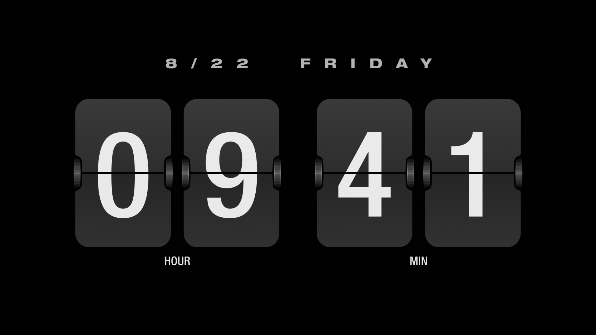
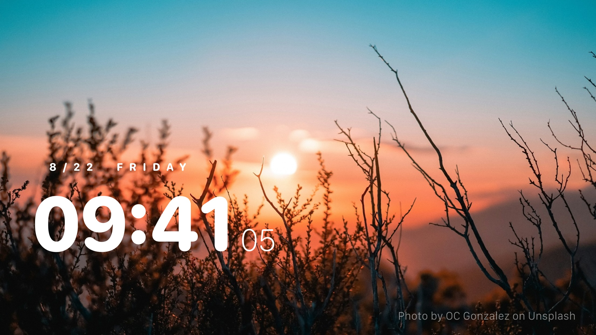
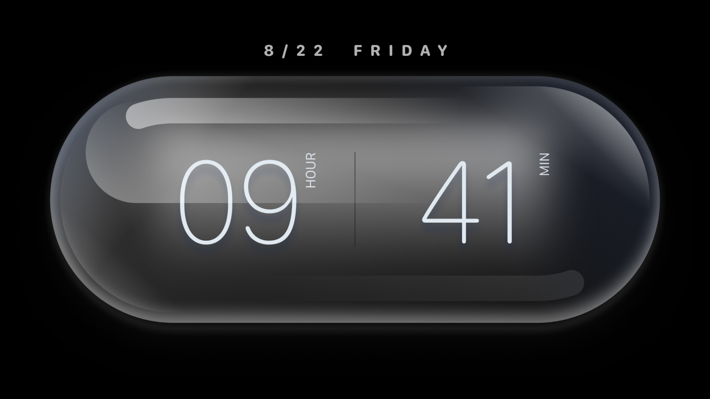
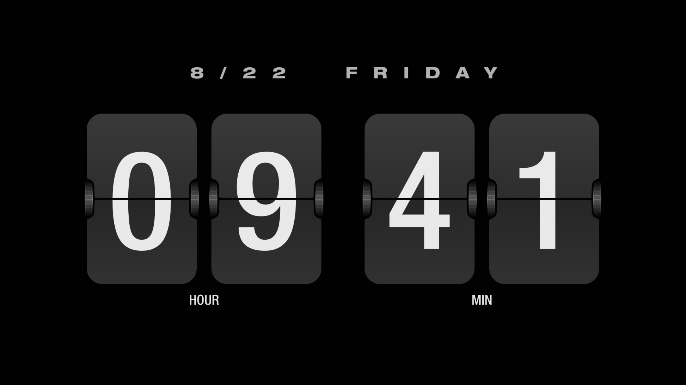
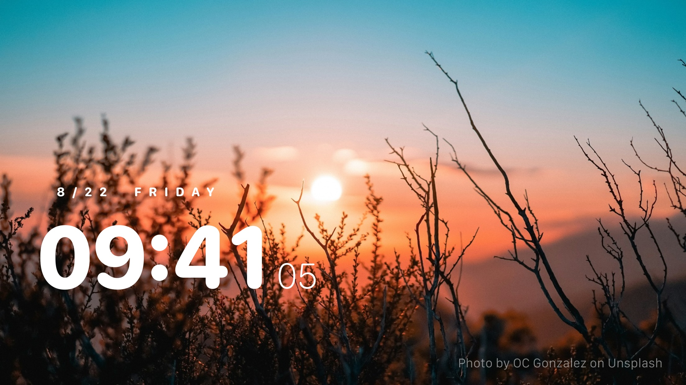
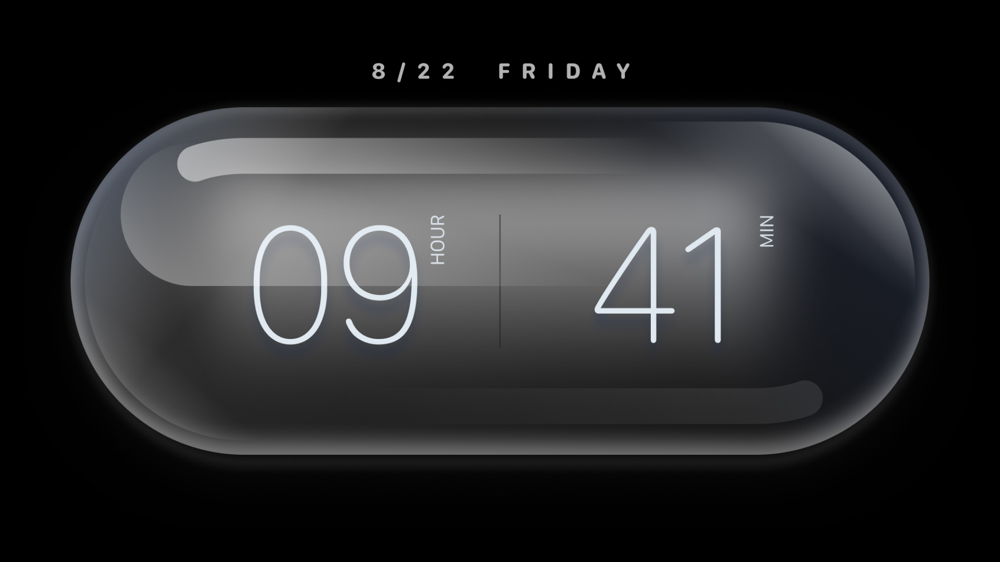

What is Ghost Clock?
Ghost Clock is a minimalist mobile clock application designed for those who appreciate simplicity and
personalization.
It offers a variety of theme options including vintage flip, cosmic, and light-sensitive capsule
designs, allowing you
to create a unique clock experience according to your preferences. Whether placed on your office
desk,
study room, or
coffee table, Ghost Clock serves as a perfect decorative piece, adding a touch of sophistication to
your
life.
Additionally, we provide light and dark modes to cater to your personalized needs.
Why did we make it?
Our product was born out of a pursuit for focus and the beauty of life. We understand deeply the
distractions that
smartphones bring during work and study, hindering our ability to fully engage in tasks at hand.
Hence, we created it
with the aim of helping you break free from distractions and concentrate on the task itself.
However, our intention goes
beyond being a simple timekeeping tool. We aspire for it to transcend into a delightful decoration
in your life, adding
a touch of color to your daily routine. Therefore, we strive to make it both practical and
aesthetically pleasing,
fostering an environment where you can immerse yourself in focus and enjoy a more beautiful life.
 




